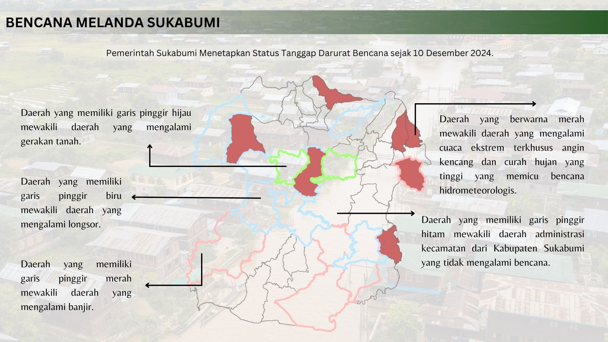

Bencana Melanda Sukabumi
Pemerintah Sukabumi menetapkan status tanggap darurat bencana sejak 10 Desember 2024.

Dalam beberapa waktu terakhir, curah hujan di Kabupaten Sukabumi tercatat mengalami peningkatan signifikan. Dari sebelumnya sekitar 100 mm, curah hujan meningkat hingga mencapai 200 mm pada akhir bulan. Peningkatan ini memicu terjadinya berbagai bencana hidrometeorologis, seperti banjir, longsor, dan pergerakan tanah yang berdampak pada beberapa kecamatan di Kabupaten Sukabumi. Sebaran kecamatan yang mengalami bencana-bencana tersebut tertera pada peta dan tabel sebagai berikut.
| Kecamatan | Bencana |
|---|---|
| Ciemas | Banjir |
| Pelabuhan Ratu | |
| Cidolog | |
| Gegerbitung | |
| Tegal Buleud | |
| Pabuaran | |
| Simpenan | Longsor |
| Cisolok | |
| Nagrak | |
| Sagaranten | |
| Simpenan | |
| Pelabuhan Ratu | |
| Warungkiara | |
| Lengkong | |
| Cikembar | Pergerakan Tanah |
| Bantargadung |
Badan Nasional Penanggulangan Bencana (BNPB) mencatat sebanyak 39 kecamatan terdampak oleh bencana ini. Tercatat juga sebanyak 20.722 jiwa terdampak dengan 13.459 jiwa terpaksa mengungsi. Bahkan dilaporkan sebanyak sepuluh orang tewas dan dua orang hilang, yang diduga tertimbun oleh longsoran. Hingga saat ini, pemerintah masih memperpanjang status tanggap darurat bencana sejak tanggal 10 Desember 2024 hingga waktu yang tidak bisa ditentukan karena masih tingginya curah hujan dan jumlah warga yang mengungsi.
Bencana-bencana ini terjadi disebabkan oleh keberadaan dari bibit siklon 95W tepatnya di Laut Natuna Utara dan sirkulasi siklonik di Samudra Hindia, barat daya Banten. Keberadaan siklon ini menyebabkan angin kencang, gelombang tinggi di laut, dan curah hujan yang tinggi. Di sisi lain, terdapat faktor lainnya seperti pembentukan belokan dan pertemuan angin serta gelombang Kelvin yang membuat meningkatnya pembentukan awan hujan. BMKG mencatat bahwa bibit siklon akan mempengaruhi Indonesia hingga 8 Desember 2024. Maka dari itu, BMKG memperingatkan bahwa potensi bencana serupa akan memungkinkan terjadi ke depannya dikarenakan Desember merupakan puncak dari musim hujan di Jawa Barat bagian selatan. Masyarakat dihimbau untuk selalu waspada dan melakukan antisipasi sehingga dampak bencana dapat diminimalisir.
Sumber
- CNN Indonesia, Daftar Wilayah di Sukabumi Terdampak Banjir dan Longsor
- Radar Sukabumi, Alasan Pemkab Sukabumi Tetapkan Status Darurat Bencana Sepekan
- Kompas.id, Tanggap Darurat Bencana di Sukabumi Diperpanjang, Apa Pemicunya?
- Transparan News, BMKG Ungkap Penyebab Bencana di Sukabumi: Pengaruh Bibit Siklon dan Cuaca Ekstrem
- Kompas.com Bandung, Update Bencana Sukabumi: 13.495 Jiwa Mengungsi
- Center for Hydrometeorology and Remote Sensing (CHRS) Data Portal, UC Irvine